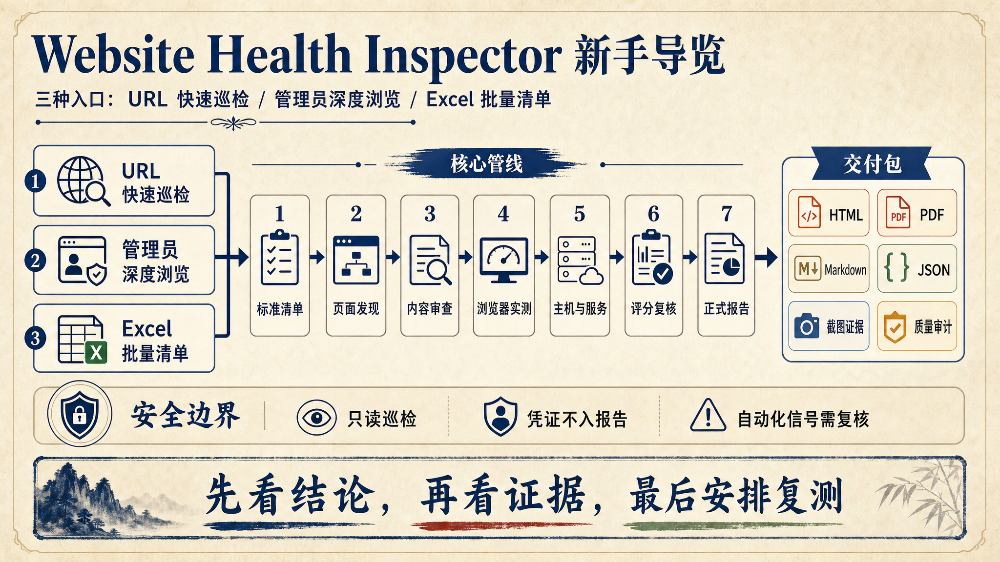

`website-health-inspector` 是一个面向管理平台管理员的网站健康巡检 Skill。它不是只把页面打开一下，也不是把日志堆进文档；它的目标是把一次巡检整理成管理人员能读、能复核、能转工单的正式报告。
管理员临时给一个地址，希望知道页面能不能打开、内容是否完整、浏览器访问是否明显异常。
管理员提供账号和密码，希望只读验证登录入口、登录后页面、受保护页面跳转和截图证据链。
管理员维护多个系统、页面、主机和服务，需要按清单批量巡检，并生成正式交付包。
| 文件或目录 | 用途 | 新手要记住什么 |
|---|---|---|
delivery/final-report.html |
正式 HTML 报告入口 | 优先交付它，但要连同整个 delivery/ 文件夹发送。 |
delivery/final-report.pdf |
PDF 归档版本 | 必须由正式 HTML 打印渲染生成，不接受占位 PDF。 |
final-report.json |
结构化总报告 | HTML 和图片有争议时，以 JSON 与正文实时数据为准。 |
score-audit.md/json |
评分合理性复核 | 这是渲染前门禁，低分或疑似重复扣分会阻断正式报告。 |
quality-audit.md/json |
质量审计 | 这是成稿后门禁，检查模板、导航、敏感信息和交付完整性。 |
delivery-manifest.md/json |
交付清单 | 用来判断包是否完整、是否 ready to deliver。 |
新手最容易卡住的地方不是命令，而是选错巡检入口。入口选错，报告就会过度承诺；入口选对，报告会自然写清楚边界、证据和下一步。
| 你手里有什么 | 该选什么模式 | 能回答的问题 | 不能回答的问题 |
|---|---|---|---|
| 一个公开 URL | 临时 URL 快速巡检 | 页面是否可访问、内容是否明显缺失、基础浏览器表现如何。 | 登录后页面、主机内部、数据库、微服务内部健康。 |
| URL + 管理员账号 + 密码 | 管理员深度浏览 | 登录入口、登录后页面、受保护页面跳转、截图证据链。 | 除非清单允许，否则不能做删除、审批、提交数据等变更操作。 |
| 一份 Excel 资源清单 | 标准清单巡检 | 系统、页面、主机、服务的批量巡检与汇总报告。 | Excel 没配置的资源不能假装已覆盖。 |
| 多个网站或多个系统 | 多站点 N+1 | 每站独立报告 + 一份批次治理总报告。 | 总体报告不能写成单站证据长分析，证据详情应链接到单站报告。 |
运行正式报告前，必须知道首页导览用哪种方式。可选项是：`GPT/AI 导读图`、`HTML 图文导览`、`复用已有 ai-report-guide.png`、或 `先启用/修复内置 image_gen 后重试`。没有明确选择时，不要让脚本自行降级，也不要默认使用 `.env` 中的 API Key。
python scripts/run_health_inspection.py --url https://example.com/admin --out runs/adhoc --guide-mode html-guide适合用户不想调用图片接口，或希望先交付可读报告的情况。
未确认导览方式时，不能默认复用旧图、默认 HTML 图文导览，也不能默认使用本地 API Key。
多站点巡检不是把所有网站塞进一份巨大的单站报告。推荐方式是 N+1：N 个网站各自生成独立 `delivery/final-report.html`，再生成 1 份整体总报告和 `delivery-batch/index.html` 首页索引。整体报告只做批次治理：健康分布、优先处置站点、共性问题族、复测计划和单站入口。
无论从 URL、凭证还是 Excel 开始，Skill 的核心思路都一样：先把输入变成标准清单，再让每个模块输出结构化子报告，最后合并、审计、渲染和交付。
URL 或 Excel 先转为 `inventory.normalized.json`，这是所有模块的统一入口。
页面发现、内容审查、浏览器实测、主机与服务检查分别产出子报告。
`merge_reports.py` 合并子报告，形成 `final-report.json`。
渲染前运行 `audit_score_reasonableness.py`，检查低分、状态冲突和重复扣分。
生成 HTML、PDF、Markdown、交付清单和质量审计，形成 `delivery/`。
`inventory.normalized.json` 是这个 Skill 的「中间语言」。这样做的好处是：URL 快速巡检、Excel 清单和深度浏览都能进入同一条管线；检查模块不用关心输入原来来自哪里；最终报告也能统一表达系统、页面、证据、发现项和边界。
健康评分不是机械累加日志。最终评分以 `scripts/scoring_model.py` 的根因聚类为准，同一根因只扣一次；重复页面、重复请求和重复日志只增加证据数量，不应重复扣分。状态也跟随有效扣分模型：100 分且无正扣分簇才是 `healthy`；存在有效扣分但未达到严重条件通常是 `warning`；已确认 critical、confirmed-outage 或总分低于 60 才进入 `critical`。
新手优先使用一键管线 `run_health_inspection.py`。只有需要定位某个阶段的问题时，再拆分执行导入、检查、合并、评分复核、渲染和质量审计。
Set-Location "C:\Users\Administrator\.codex\skills\website-health-inspector"python scripts/run_health_inspection.py --url https://example.com/admin --out runs/adhoc --guide-mode html-guide适合只检查公开页面。报告中要写清楚：此模式不能证明登录后页面健康，也不能覆盖主机和微服务内部状态。
推荐把密码放进当前进程环境变量，不要写入命令历史、报告或文档。
Read-Host "Admin password" -MaskInput | ForEach-Object {
[Environment]::SetEnvironmentVariable("WEBSITE_HEALTH_ADMIN_PASSWORD", $_, "Process")
}
python scripts/run_health_inspection.py `
--url https://example.com/admin `
--username admin `
--password-env WEBSITE_HEALTH_ADMIN_PASSWORD `
--out runs/deep `
--guide-mode html-guide如果还没有模板，先生成空白模板：
python scripts/create_inventory_template.py --out assets/inventory-template.xlsx准备好 Excel 后导入并执行巡检：
python scripts/import_inventory_excel.py --excel path\to\inventory.xlsx --out runs/inventory-run
python scripts/inspect_sites.py --inventory runs/inventory-run/inventory.normalized.json --out runs/inventory-runpython scripts/run_multi_site_inspection.py --excel path\to\sites.xlsx --out reports/batch --max-workers 5 --guide-mode html-guide交付入口是 `reports/batch/delivery-batch/index.html`。对外发送时，要发送整个 `delivery-batch/` 文件夹。
python scripts/build_adhoc_inventory.py --url https://example.com/admin --out runs/adhoc
python scripts/discover_site_pages.py --inventory runs/adhoc/inventory.normalized.json --out runs/adhoc --merge
python scripts/check_content.py --inventory runs/adhoc/inventory.normalized.json --out runs/adhoc
python scripts/check_deep_browser.py --inventory runs/adhoc/inventory.normalized.json --out runs/adhoc
python scripts/check_host_services.py --inventory runs/adhoc/inventory.normalized.json --out runs/adhoc
python scripts/merge_reports.py --in runs/adhoc --out runs/adhoc/final-report.json
python scripts/audit_score_reasonableness.py --report runs/adhoc/final-report.json --out runs/adhoc --threshold 60
python scripts/render_report.py --report runs/adhoc/final-report.json --out runs/adhoc --guide-mode html-guide
python scripts/audit_report_quality.py --run-dir runs/adhoc --iteration 1 --out runs/adhoc/quality-audit.md这个 Skill 的价值不只在「跑检查」，更在「不把半成品交出去」。正式报告至少经过两个门禁：渲染前的评分合理性复核，和成稿后的质量审计。
`audit_score_reasonableness.py` 专门检查低分、分数重算不一致、健康状态与评分语义不一致、疑似重复扣分等问题。默认阈值是 60 分。阻断时，只保留 `final-report.json`、`score-audit.json` 和 `score-audit.md`，不要更新正式 `delivery/`。
python scripts/audit_score_reasonableness.py --report runs/adhoc/final-report.json --out runs/adhoc --threshold 60可以进入正式 HTML、PDF 和 Markdown 渲染。
先人工复核重复扣分、低分原因和状态冲突；不要自动改分或跳过审计。
如果确实是严重问题导致低分，人工确认后才能显式继续渲染，并写入批准说明：
python scripts/render_report.py `
--report runs/adhoc/final-report.json `
--out runs/adhoc `
--guide-mode html-guide `
--score-review-approved `
--score-review-note "人工确认低分合理，未发现重复扣分"`audit_report_quality.py` 检查正式模板、折叠章节、导航锚点、导读图引用、敏感信息、质量审计文件、PDF、交付清单和 `delivery/` 结构。它的状态表示交付物质量，不是网站健康状态来源。
python scripts/audit_report_quality.py --run-dir runs/adhoc --iteration 1 --out runs/adhoc/quality-audit.md| 组件 | 作用 | 质量审计关注点 |
|---|---|---|
| 导览封面 | AI 导读图或 HTML 图文导览 | 有 `ai-report-guide.png` 或 `html-guide-visual`，且不展示 API Key 或运行失败提示。 |
| 阅读导航 | 帮助管理人员跳到重点章节 | 存在 `report-nav`，滚动时能用 `aria-current` 标记当前章节。 |
| 折叠式证据章节 | 压缩默认阅读长度 | 存在 `fold-section`，技术证据不压过管理结论。 |
| 交付摘要 | 方便转工单、周报和复测任务 | 摘要可复制，且不包含敏感信息。 |
| 性能快照 | 展示本轮浏览器打开时间 | 包含平均打开时间、最慢页面、慢页面数和 TTFB；不写成压测结论。 |
网站健康巡检最怕两件事：一是越权操作，二是把自动化边界写成生产故障。新手只要守住下面几条，报告就会稳很多。
`--password-env WEBSITE_HEALTH_ADMIN_PASSWORD` 能避免命令历史和报告里出现明文密码。
API Key、Token、Cookie、私钥、管理员密码都不能出现在报告正文、日志摘要、交付清单、公开文档或截图说明里。
| 看到的信号 | 新手容易误写 | 推荐写法 |
|---|---|---|
| 登录态未确认 | 后台登录失败。 | 自动化巡检未捕获稳定登录态信号，需结合人工登录复测。 |
| 受保护页面跳转 | 权限系统故障。 | 若发生在自动化登录态未确认之后，应先解释为巡检代理会话保持待复核。 |
| 401、403、ERR_ABORTED | 生产故障已确认。 | 标注证据边界、影响范围、责任角色和下一步复测证据。 |
| HTTP 文本过短 | 页面内容缺失。 | 对 SPA 优先采信浏览器截图和页面文本；普通 HTTP 文本过短可作为低可信提示。 |
`ai-report-guide.png` 是阅读辅助，可能滞后于最新 JSON。正式结论永远以 `final-report.json`、HTML 封面实时数据栏和正文为准。最终 HTML 不应该出现 API Key 配置、`--guide-mode`、图片接口失败说明或调试过程提示。
管理员深度浏览只验证只读路径：登录、打开后台首页、查看页面、读取审计日志或受保护入口。除非清单明确 `allow_mutation=true`，否则不要执行删除、审批、重启、提交业务数据、批量导入、权限变更或触发真实通知的动作。
| 文件 | 说明 |
|---|---|
SKILL.md | Agent 使用这个 Skill 时首先读取的入口规则。 |
docs/quick-start.md | 三种巡检模式和常用命令。 |
docs/configuration-and-security.md | 环境变量、凭证、只读原则和敏感信息边界。 |
docs/pipeline-architecture.md | 脚本职责、数据流和模块输出契约。 |
docs/report-delivery.md | 正式报告结构、交付规则和常见问题。 |
references/report-writing.md | 管理报告写作规范和证据边界表述。 |
references/report-design.md | HTML 报告设计规范和第一屏要求。 |
资源清单：描述系统、页面、主机、服务、内容检查规则和管理员流程的输入数据。
`inventory.normalized.json`：所有检查模块共同使用的标准化清单。
子报告：单个检查模块输出的结构化 JSON，例如内容审查、浏览器实测或主机服务检查。
`final-report.json`：合并后的结构化总报告，是 HTML 和 PDF 的数据源。
评分合理性复核：正式渲染前检查低分、重复扣分和状态评分冲突的门禁。
质量审计：正式报告生成后检查模板、内容、敏感信息和交付完整性的门禁。
N+1 模式：多站点巡检时，每个站点一份报告，再加一份整体总报告和批次索引。